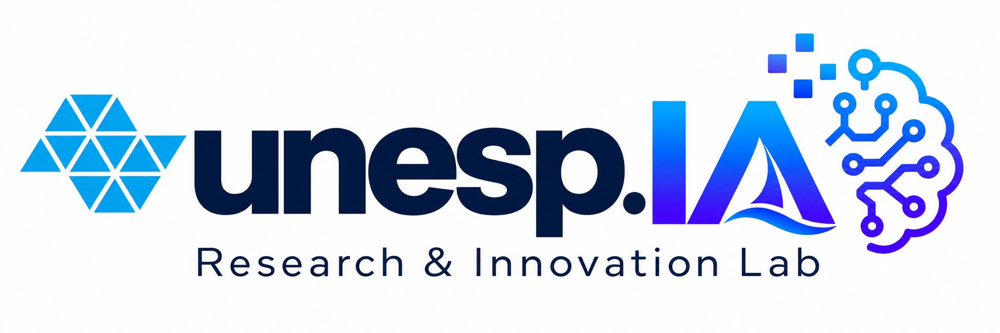
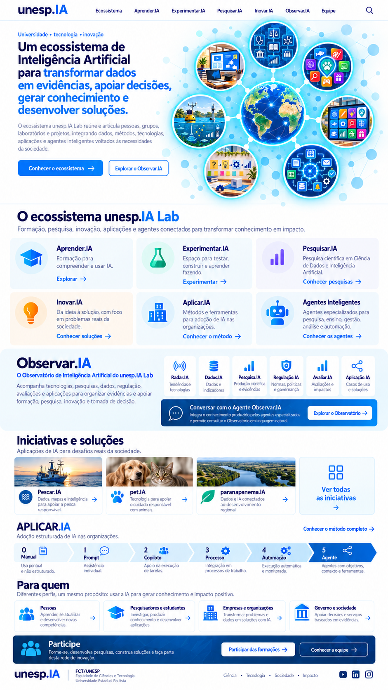
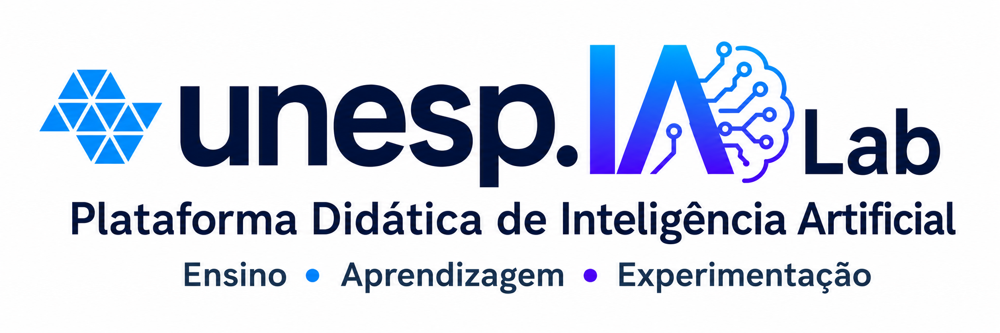
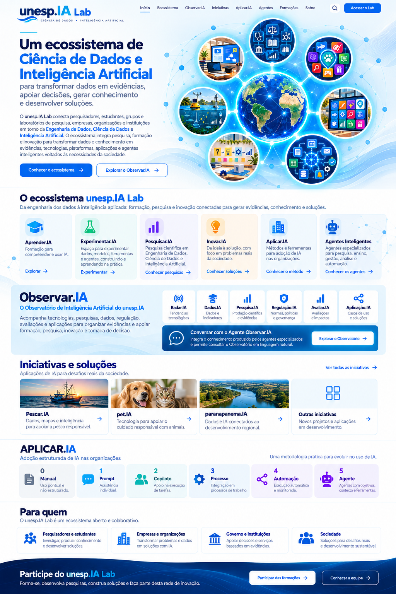
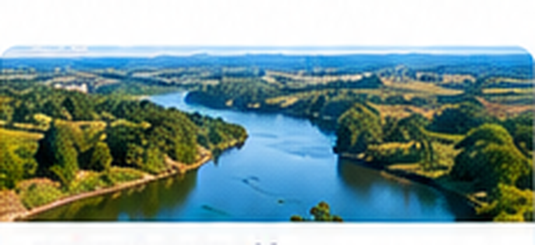

Aprender.IA
Formação para compreender e usar IA.
Explorar
Pesquisa, formação e inovação para transformar dados em evidências, evidências em conhecimento e conhecimento em avanços científicos, tecnologias e soluções inteligentes.

O unesp.IA Lab conecta pesquisadores, estudantes, grupos e laboratórios de pesquisa, empresas, organizações e instituições em um ecossistema de Computação, Dados e Inteligência Artificial. Integra pesquisa, formação, experimentação e inovação para transformar dados em evidências e conhecimento e converter conhecimento em avanços científicos, métodos, tecnologias, aplicações e soluções inteligentes.
Formação para compreender e usar IA.
ExplorarEspaço para experimentar dados, modelos, ferramentas e agentes, construindo e aprendendo na prática.
ExperimentarPesquisa em Engenharia de Dados, Ciência de Dados e IA: TCC, IC, mestrado e doutorado.
Conhecer pesquisasDa ideia à solução, com foco em problemas reais da sociedade.
Conhecer soluçõesMétodos e ferramentas para adoção de IA nas organizações.
Conhecer o métodoAgentes especializados para pesquisa, ensino, gestão, análise e automação.
Conhecer os agentesAcompanha tecnologias, pesquisas, dados, regulação, avaliações e aplicações para organizar evidências e apoiar formação, pesquisa, inovação e tomada de decisão.
Tecnologias e aplicações para problemas reais.

Plataforma didática de Inteligência Artificial para ensino, aprendizagem e experimentação.

Dados, mapas e inteligência para apoiar a pesca responsável.
Tecnologia para apoiar o cuidado responsável com animais.
Assistente didático para criar, revisar e aprimorar instruções para IA.

Dados e IA conectados ao desenvolvimento regional.
Adoção estruturada de IA nas organizações
Uma metodologia prática para evoluir no uso de IA.
Uso pontual e não estruturado.
Assistência individual.
Apoio na execução de tarefas.
Integração em processos de trabalho.
Execução automática e monitorada.
Agentes com objetivos, contexto e ferramentas.
O ecossistema do unesp.IA Lab é aberto e colaborativo.
Investigar, produzir conhecimento e desenvolver soluções.
Transformar problemas e dados em soluções com IA.
Apoiar decisões e serviços baseados em evidências.
Soluções para desafios reais e desenvolvimento sustentável.